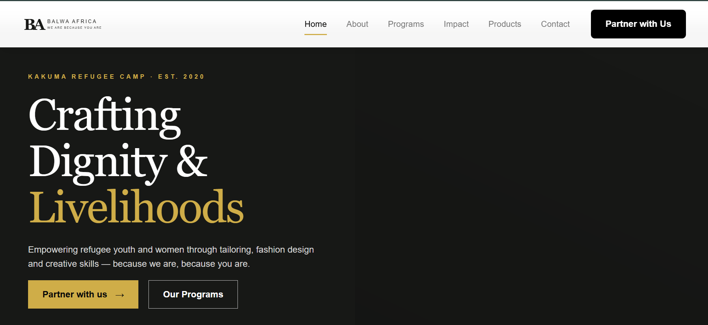

Case study · Community organization website
Balwa Africa
A mission-led website for a Kakuma organization empowering refugee youth and women through tailoring, fashion design and creative skills.

Project overview
Crafting dignity and livelihoods.
Balwa Africa’s website presents an organization established in Kakuma in 2020. The public message centers on empowering refugee youth and women through tailoring, fashion design and creative skills.
The original problem
A strong mission needed a clear digital home.
The organization needed one place to explain who it is, present programmes and impact, showcase products, provide contact details and invite partnership.
Process
Lead with the mission, then support action.
- Organize the story around mission, programmes and impact.
- Create clear routes for partners and interested visitors.
- Design a responsive editorial interface.
- Build and test the public website.
Final solution
A focused organization website.
- Mission-led homepage
- About and programmes
- Impact communication
- Products and contact
- Partnership calls to action
Technology
Responsive web design and development.
The verified public project is hosted at balwaafrica.vercel.app. The exact development stack should be added when Emmanuel confirms it.
Outcome
A live, crawlable home for Balwa Africa’s work.
The website gives the organization a clear public narrative and routes to programme, impact, product and partnership information. Traffic or partnership conversion figures are not currently available.
Need a clear website for your organization?
Start a project